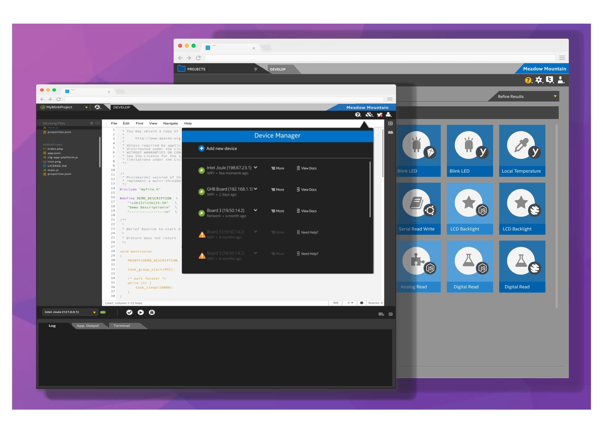

Passionate about understanding people and designing better experiences.
Where I started. I've always been fascinated by human behavior—why we think, act, and interact our world the way we do.
Foundational Expertise & Career Evolution My career has been shaped by a deep-rooted passion for technology, communication, and user experience. Early on, I built a strong foundation in communications, information design, and user engagement, which later became instrumental in my transition into UX research and strategy. I started my professional journey working for one of the first internet service providers, gaining hands-on experience in the emerging digital landscape. This early exposure to the evolving internet ecosystem sparked my interest in user interactions with technology and how digital platforms could be optimized for better usability. I then moved into the electronic design automation (EDA) industry, working at Synopsys for six years, where I played a key role in SolvNet, the company’s customer portal where our team enjoyed the satisfaction of winning the IEEE best in class support portal. This experience further reinforced my expertise in B2B platforms, self-service portals, and enterprise UX—critical components in improving digital workflows and customer engagement. In 2013, I joined Intel, where I spent over a decade leading user experience research, developer experience strategy, and product innovation. My work spanned multiple domains, including developer tools, AI-driven research, and enterprise UX, shaping digital experiences for a global user base. My journey reflects a blend of adaptability, technical depth, and user advocacy, making me uniquely positioned to drive human-centered product development in today’s fast-evolving digital landscape.
What drives me. I'm passionate about uncovering the “why” behind user behaviors—understanding their needs, frustrations, and motivations. Whether it’s developers navigating complex enterprise tools or end-users interacting with AI-driven experiences, my goal is to ensure that every product decision is informed by real-world insights, not assumptions.
What value I add. I bridge the gap between users and product teams, translating research into actionable strategies that drive product innovation. With a background spanning developer experience, AI-driven UX research, and enterprise software, I specialize in mixed-methods research, journey mapping, and usability testing to improve workflows, streamline onboarding, and enhance digital experiences. My work has led to measurable improvements, from boosting product adoption rates to optimizing user flows that reduce friction and improve engagement. Ultimately, I see UX research as more than just gathering data—it's about amplifying the user’s voice and ensuring technology serves people, not the other way around.
Human-Centered Design - Prioritize needs, remove friction, create intuitive experiences.
DesignOps - Combine qualitative and quantitative data for well-rounded insights.
Storytelling - Translate research findings into compelling narratives.